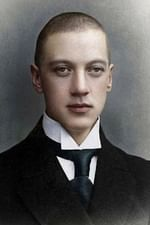

Созидающий башню сорвётся,
Будет страшен стремительный лёт,
И на дне мирового колодца
Он безумье своё проклянёт.
Разрушающий будет раздавлен,
Опрокинут обломками плит,
И, Всевидящим Богом оставлен,
Он о муке своей возопит.
А ушедший в ночные пещеры
Или к заводям тихой реки
Повстречает свирепой пантеры
Наводящие ужас зрачки.
Не спасёшься от доли кровавой,
Что земным предназначила твердь.
Но молчи: несравненное право —
Самому выбирать свою смерть.